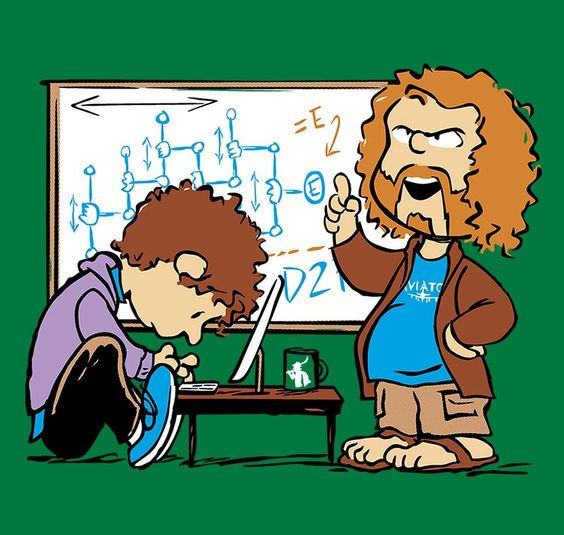

|
|
1980′lerin sonunda Silikon Vadisi’nde çalışan bir bilgisayar programcısının yaşadıklarını konu edinecek dizinin merkezinde; içine kapalı, asosyal bilgisayar programcısı Richard ve onun beş arkadaşının öyküsü yer alacak. Kara mizah türünde olacak yapımda, teknoloji dünyasındaki insanların başarıya ulaşabilmek için geçtiği yolları bir bir göreceğiz! |
||||
|  |